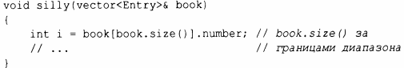
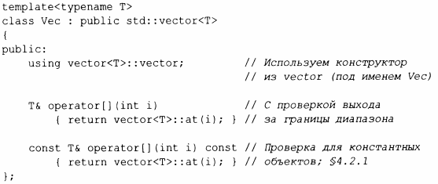
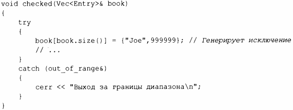
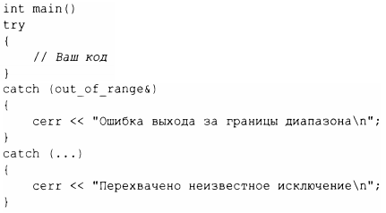

vector стандартной библиотеки не гарантирует проверки выхода за границы диапазона. Например:
Такая инициализация, вероятно, приведет к некоторому случайному значению в i, а не к ошибке. Это нежелательно, и ошибки выхода за границы диапазона являются распространенной проблемой. Поэтому я часто использую следующую простую адаптацию вектора:
Vec наследует от vector все, за исключением операций индексации, которые он переопределяет с использованием проверки выхода за границу диапазона. Функция at () представляет собой операцию индексации vector, которая генерирует исключение out_of_range, если ее аргумент выходит за пределы диапазона вектора (§3.5. 1 ).
Для Vec доступ за границами диапазона сгенерирует исключение, которое пользователь может перехватить. Например:
Здесь будет сгенерировано, а затем перехвачено исключение (§3.5.1 ). Если пользователь не перехватит исключение, программа будет завершена в точно определенном порядке, а не будет продолжать выполнение или сбоить некоторым неопределенным образом. Один из способов свести к минимуму сюрпризы из-за неперехваченных исключений - использовать main () с trу-блоком в качестве тела. Например:
Этот подход обеспечивает обработчик исключений по умолчанию, поэтому, если мы не сможем перехватить какое-то из исключений, в стандартный поток диагностики ошибок cerr (§10.2) будет выведено сообщение о неизвестном исключении.
Почему стандарт не гарантирует проверку выхода за границы диапазона? Многие критически важные приложения используют vector, и проверка всех индексов подразумевает снижение эффективности на величину порядка 10%. Очевидно, что эта стоимость может сильно различаться в зависимости от используемого аппаратного обеспечения, оптимизаторов и приложения, которое использует индексы. Однако опыт показывает, что такие накладные расходы могут заставить людей предпочесть гораздо более опасные встроенные массивы. Привести к отказу от векторов может даже простой страх перед такими накладными расходами. Как минимум вектор легко проверяется во время отладки, а при необходимости можно легко создать версию вектора с проверкой поверх версии по умолчанию - без проверки выхода за границы диапазона. Некоторые реализации избавляют вас от необходимости определять собственный класс Vec (или его эквивалент), предоставляя версию вектора с проверкой выхода за границы диапазона (например, в качестве опции компилятора).
Цикл for для диапазона позволяет отказаться от каких-либо проверок без каких-либо затрат, обеспечивая доступ к элементам через итераторы в диапазоне [begin (), end ()). То же самое относится к алгоритмам стандартной библиотеки: пока их аргументы, являющиеся итераторами, корректны, гарантируется отсутствие ошибок выхода за границы диапазона.
Если вы можете использовать vector::аt() непосредственно в коде, то обходное решение Vec вам не понадобится. Кроме того, в некоторых стандартных библиотеках реализованы реализации vector с проверкой выхода за границы диапазона, которые предлагают более полную проверку, чем Vec.